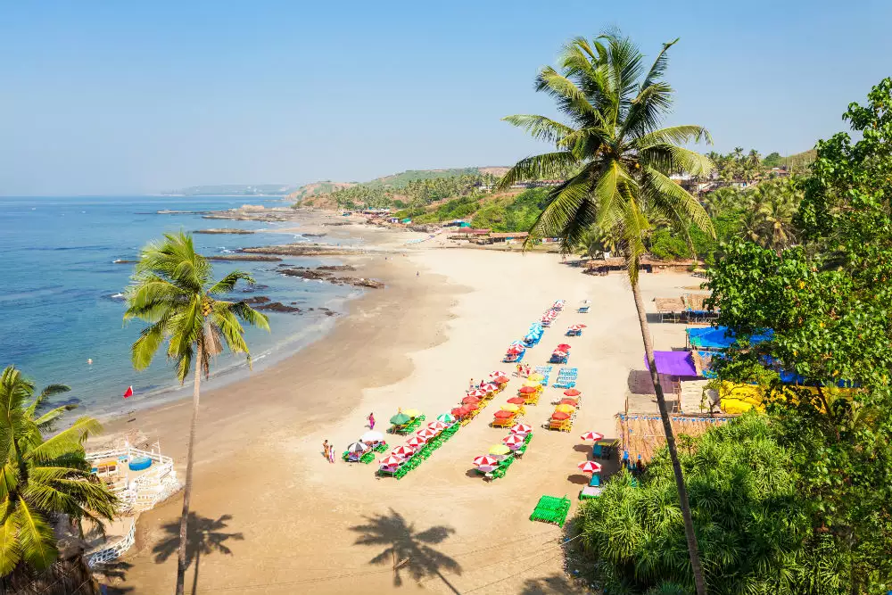

Explore the Beaches of Goa, India

Baga Beach
Baga Beach is one of the most popular beaches in North Goa, known for its nightlife, water sports, and vibrant atmosphere. It’s a must-visit for anyone looking to experience the lively side of Goa.
Dudhsagar Waterfalls
Dudhsagar Falls is one of India's tallest waterfalls, located on the Goa-Karnataka border. Its name means "Sea of Milk," and the waterfalls cascade down from a height of over 300 meters.


Basilica of Bom Jesus
The Basilica of Bom Jesus is a UNESCO World Heritage Site and one of the most famous churches in Goa. It holds the mortal remains of St. Francis Xavier and is a stunning example of Baroque architecture.
Fun Facts About Goa
- Goa was a Portuguese colony for over 450 years until 1961.
- It’s home to more than 50 beaches, including popular ones like Anjuna, Vagator, and Palolem.
- Goa’s Dudhsagar Falls is one of the highest waterfalls in India.